pip install requests
Build a LabVIEW app
Table of Contents
This tutorial shows you how to use LabVIEW to orchestrate building a simple LabVIEW application.
If you are a LabVIEW developer who is new to CI/CD concepts, or you might be familiar with these concepts but don’t know how to implement building your application using Jenkins, then this tutorial is for you.
We’ll walk through setting up Jenkins as our CI server and using it to automate graphical diffing and testing of our project (which you’ll obtain from this example page on ni.com). Jenkins will monitor GitHub Pull Requests for changes and will comment and check if the LabVIEW project can build successfully. Unit test results will be saved to a JUnit XML report.
Duration: This tutorial takes 20-40 minutes to complete (assuming you’ve already met the prerequisites below). The exact duration will depend on the speed of your machine and whether or not you’ve already installed Jenkins from another tutorial.
You can stop this tutorial at any point in time and continue from where you left off.
Prerequisites
For this tutorial, you will require:
-
A macOS, Linux or Windows machine with:
-
256 MB of RAM, although more than 2 GB is recommended.
-
10 GB of drive space for Jenkins and your Docker images and containers.
-
-
The following software installed:
-
Python(Version 3.6.3 or later). For these examples to work, make sure Python is added to your System Path.
-
Git and optionally GitHub Desktop.
Note: This tutorial uses Jenkins on a Windows machine. This means that file paths may be Windows-specific. Please modify any file paths and/or commands to your specific Operating System.
LabVIEW CLI Setup
The LabVIEW Command Line Interface (LabVIEWCLI) is installed alongside LabVIEW 2018+ and is used to run LabVIEW commands, such as unit testing, through the Command Line. To use the LabVIEWCLI, you must enable VI Server: Tools >> Options >> VI Server. Make sure the TCP/IP checkbox is enabled and leave the Port as 3363.
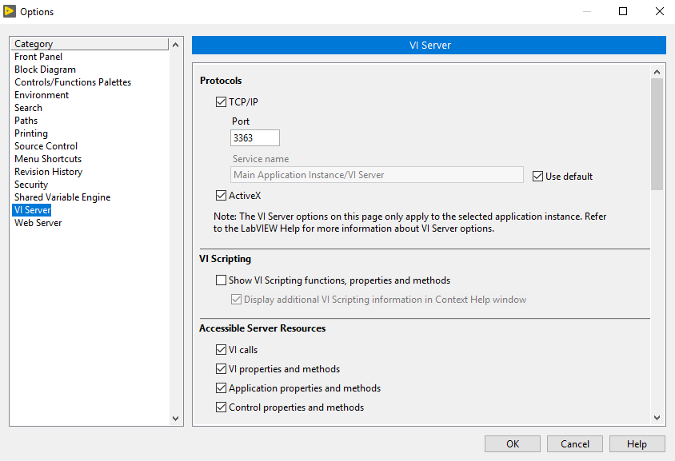
Python Setup
The Python requests library must be installed in order for Jenkins to post results to GitHub. One way to do this is by opening a command prompt and running the following command:
GitHub Setup
Repository Setup
We’ll create three GitHub repositories. Each of these repositories will be used for one of the following:
-
Host the script files, library files, and infrastructure items needed for the build server.
-
Host the actual example application.
-
Host images used during the VI diffing step.
To create these repositories:
-
Create or log in to your GitHub account. Make sure your email is verified.
-
Click on the New button next to Repositories: 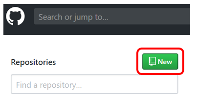
-
On the Create a new repository screen, fill out the Repository name and Description: 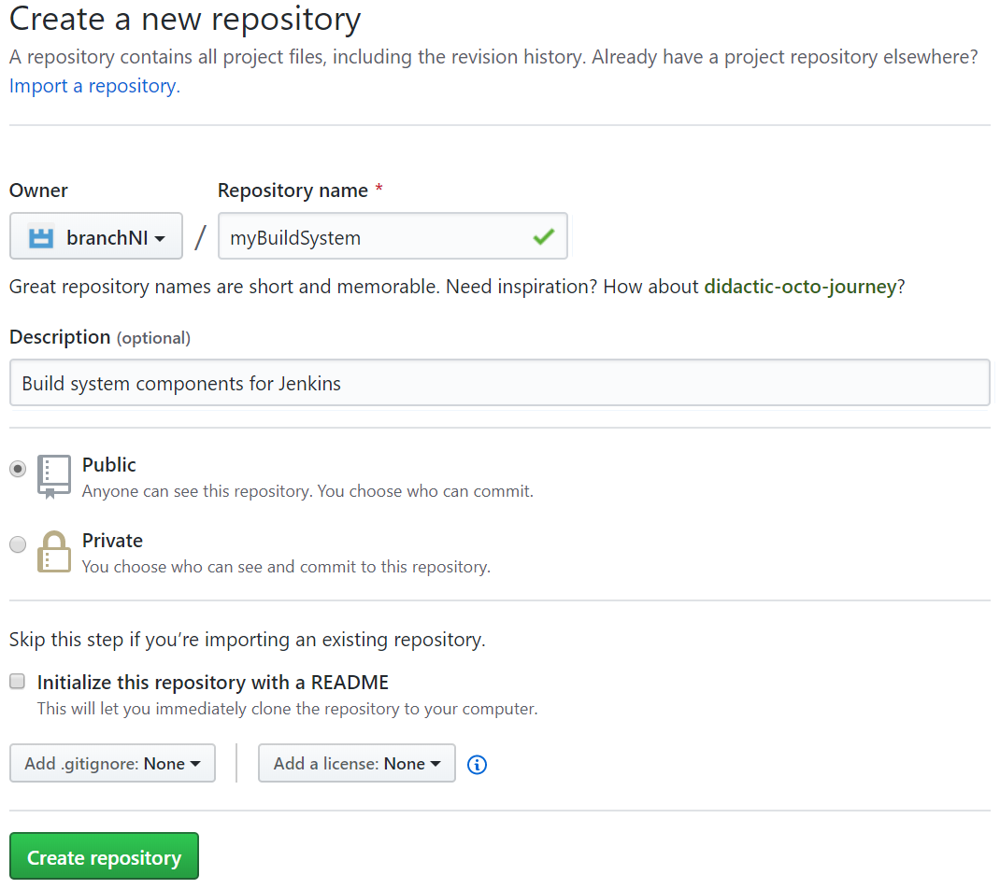
-
Click Create repository to create the repository.
-
Repeat steps 2-4 using the below information. This will be the repository for the actual example application. 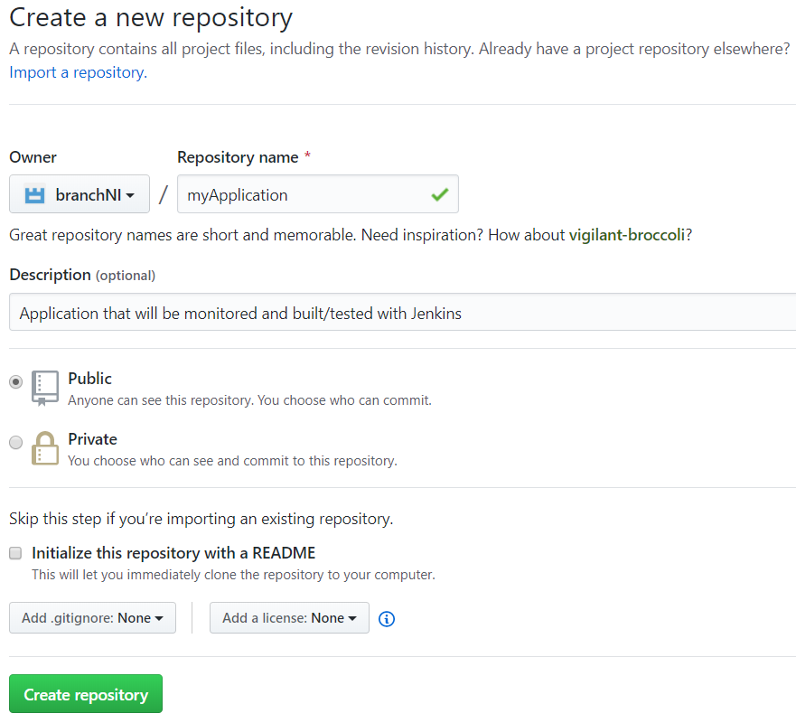
-
Repeat steps 2-4 with the following information. This will be used to host images for diffing. 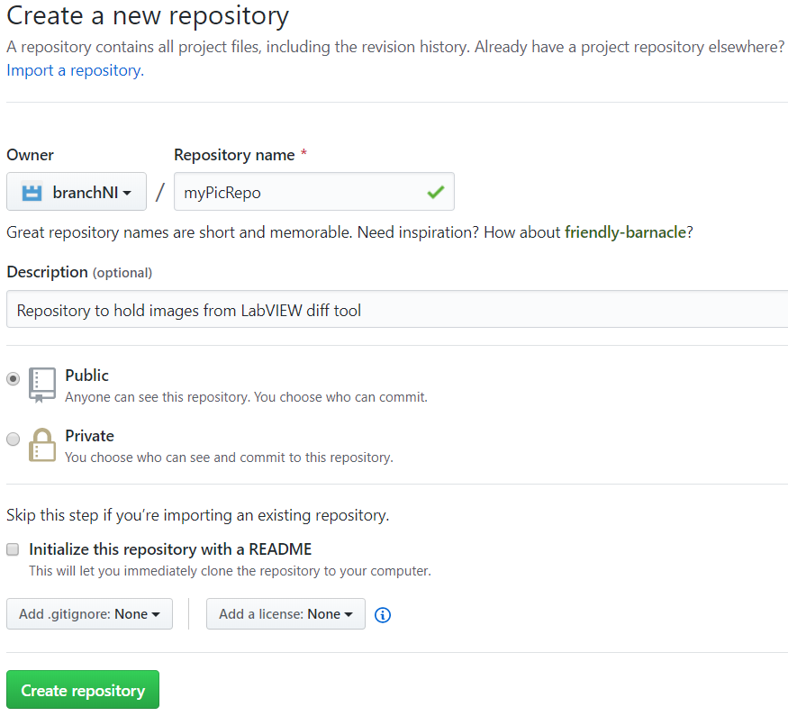
-
Open a terminal with Git. If you installed Git Bash on Windows, open Git Bash: 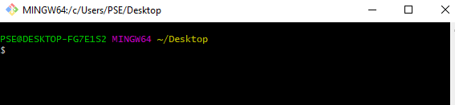
-
Create a local directory to maintain your Jenkins files. For this example, we’ll be using the
C:/Users/<User>/Documents/GitHubdirectory. To create and navigate to this directory, run the following commands:cd “C:/Users/<User>/Documents”
mkdir GitHub
cd GitHub
-
Run the following command (using the URL copied from Step 5) to copy the Git repository and its contents onto your machine (You can also obtain the HTTPS URL of the repository by clicking on the Copy button on the GitHub repository page):
git clone https://github.com/<Organization Name>/<Repository Name>.git
-
Repeat Step 9 for the myApplication repository.
-
In Windows Explorer, place the contents of
../myBuildsystemfrom the example files located here in the../myBuildSystemdirectory located on your machine: 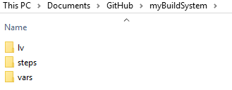 -
Navigate to the directory in the Git terminal, and run the following command to add all files within the directory to the Git repository:
cd “C:/Users/<User>/Documents/GitHub/<Repository Name>” git add .
-
Run the git commit command to commit all changes and add a comment. If you can’t run the command because you’re missing credentials, you can set them:
git config --global user.email <<Your GitHub Email>> git config --global user.name <<Your GitHub Username>> git commit -m “Added files”
-
Run the git push command to push all committed changes to the remote repository (i.e. GitHub). After this step, the repository will contain all necessary components we will need for this example.
git push origin master
-
Next, we’ll perform similar steps to set up the example application repository. In Windows Explorer, place the contents of
../myApplicationfrom the example files located here in the../myApplicationdirectory located on your machine: 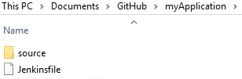 -
Open up
Jenkinsfilein the../myApplicationdirectory. Change the lvVersion and lvBitness variables according to which version of LabVIEW you are using. For instance, with LabVIEW 2018 32-bit, your Jenkinsfile will look like this: 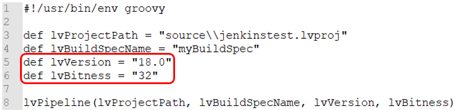 -
Run the commands from steps 12-14, this time for the myApplication repository:
cd <<myApplication directory>> git add . git commit -m "Added files" git push origin master
Now, your files are set up and in place for Jenkins to use.
Personal Access Token
For Jenkins to access your GitHub information, it will need a Personal Access Token. We will generate Personal Access token through GitHub:
-
On the GitHub website, click on your Avatar >> Settings
-
On the left-hand side of the Settings page, click on Developer Settings
-
Click on Personal access tokens >> Generate new token.
-
Enter a descriptive name for the token, such as ‘Jenkins LabVIEW Token’, and select the repo scope. 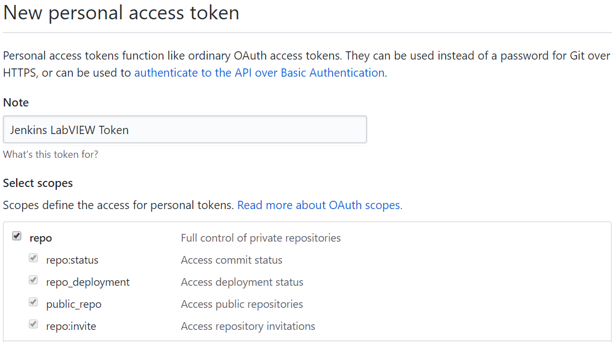
-
At the bottom of the page, click Generate token.
-
Copy down your Personal access token. This is your only chance to copy the token. Keep your access token safe, so others can’t access your GitHub. 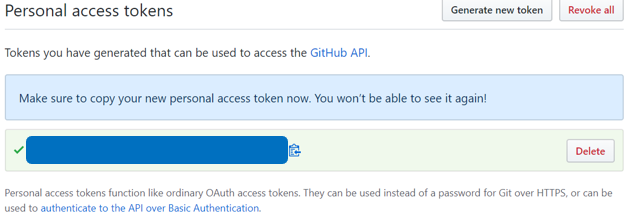
Congrats! You’ve set up the GitHub repositories you’ll need for this example, and you have the personal access token so Jenkins can access your GitHub information. Next, we’ll configure Jenkins to use these items.
Jenkins Setup
Jenkins Initial Setup
Note: This tutorial uses the classic Jenkins view, with minimal plugins to get the example running. You can use additional plugins such as Blue Ocean for an enhanced UI experience.
-
Install Jenkins based on your Operating System using the help, and navigate to the address of your Jenkins server in your browser. A few additional notes (all of which are already mentioned in the aforementioned Jenkins help):
-
The default Jenkins address is http://localhost:8080
-
The first time you launch Jenkins, you will need to unlock it with the admin password from the Console log output 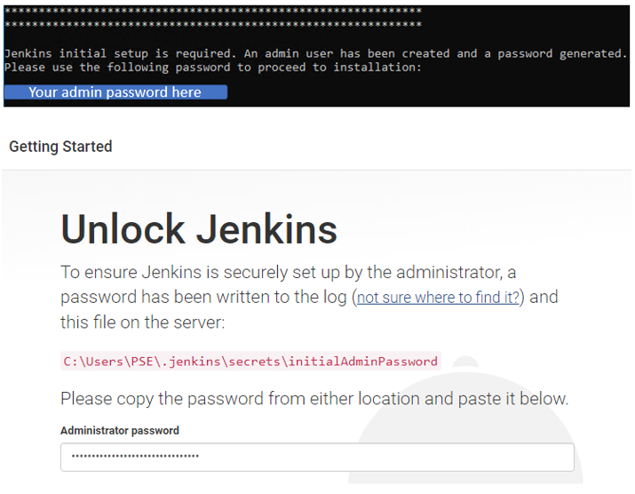
-
-
When prompted to Customize Jenkins, select the Select plugins to install option. Here, make sure the following Plugins are selected:
-
GitHub Branch Source
-
Folders Plugin
-
Pipeline: GitHub Groovy Libraries
-
-
Click Install at the bottom of the page to install the plugins.
-
Once plugins are complete, you’ll be prompted to create a user. Enter your credentials and click Save and Continue. 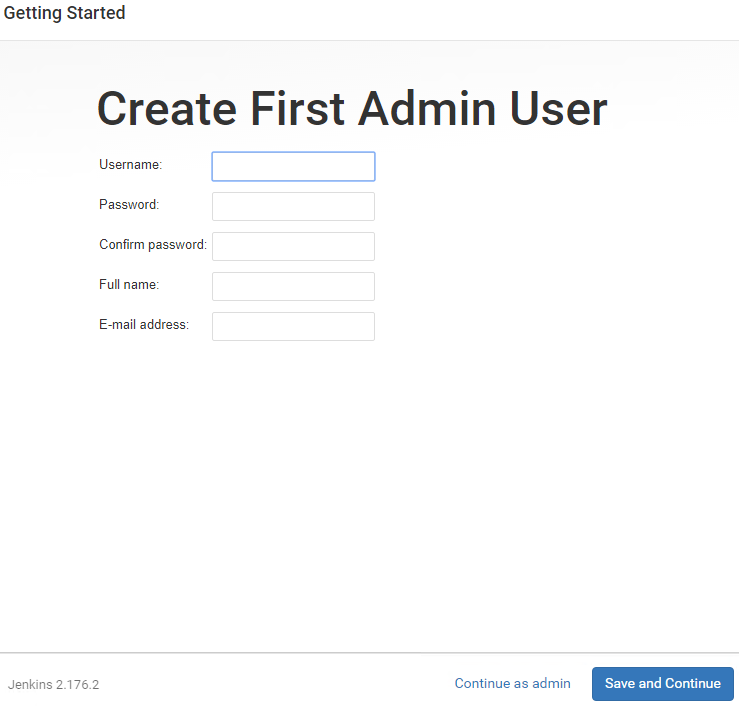
-
On the following Instance Configuration page, leave the Jenkins URL as-is.
-
Click Start using Jenkins to begin your Jenkins configuration.
Setting up Environment Variables and Credentials
Environment variables can be accessed across Jenkins jobs. We will want certain values accessible when Jenkins tries to build, test and diff your application. Since the GitHub organization name, access token, and picture repository will likely be the same across Jenkins jobs, we will set them in our Jenkins configuration.
-
From the Jenkins dashboard, navigate to the system configuration page: Manage Jenkins >> Configure System
-
Navigate to the Global properties section.
-
Check the Environment variables box to display the List of variables.
-
Click Add to add a new environment variable. Fill out the Name as shown below (BUILD_SYSTEM_REPO), and enter myBuildSystem in the Value field: 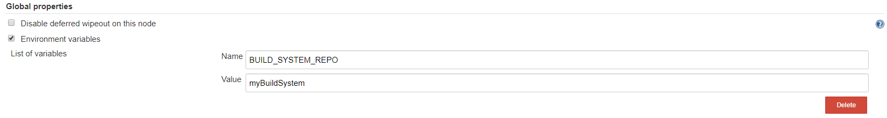
-
Click Add another time and add the LV_BUILD_OUTPUT_DIR environment variable. This should be an empty local directory anywhere on your computer, that LabVIEW will build and output files to. For instance, you may use something like
C:\Windows\Temp\jenkins. -
Click Add two more times to add the ORG_NAME variable and the PIC_REPO variable. The value fields for these variables should be your organization’s name (instead of ‘branchNI’) and myPicRepo, respectively. These are the two repositories we created in the GitHub Setup section. Your Environment variables section should look like this: 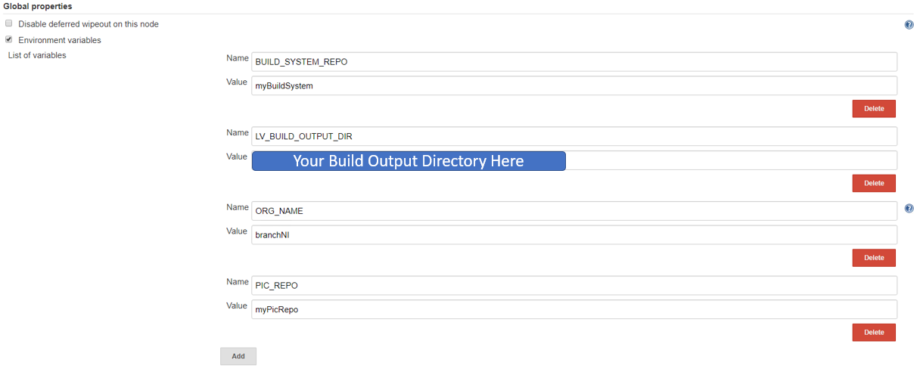
-
Click Save at the bottom of the screen to save your changes.
-
Now, navigate to the Credentials page: Jenkins Dashboard >> Credentials >> System >> Global credentials >> Add credentials
-
Use the following settings, entering your GitHub access token as the ‘Secret’ field. 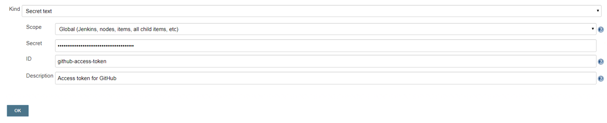
Setting Up the Global Library
The Global Library contains the script files and other components that will be used each time Jenkins tries to build. In this example, we are hosting them in the myBuildSystem repository. We will link Jenkins to that repository so it can use those files for each job.
-
On the main Jenkins dashboard: Manage Jenkins >> Configure System
-
Under the Global Pipeline Libraries section, click Add and fill out the credentials for the myBuildSystem repository. Make sure to check the Load implicitly checkbox. Your options should look like this: 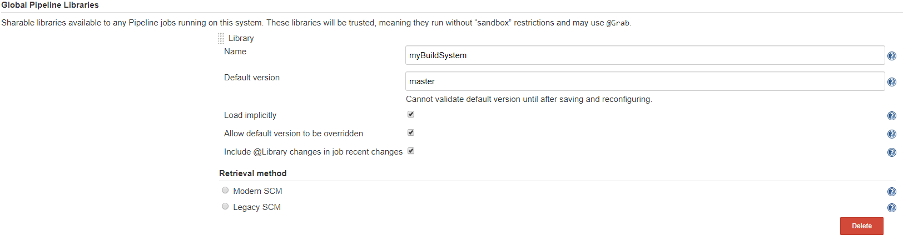
-
Here, ‘master’ refers to the master branch of the repository. The steps we performed in the GitHub Setup section pushed all files to the ‘master’ branch. More info on GitHub flows here.
-
-
Now, we’ll want to select the Retrieval method. For this example, we’ll use Modern SCM. Select the Modern SCM radio button, followed by the GitHub radio button under Source Code Management: 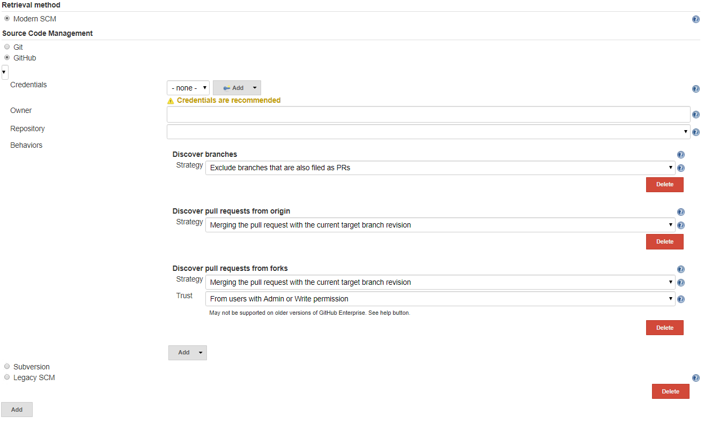
-
Start by adding Credentials. Click the Add dropdown next to the credentials field >> Jenkins. 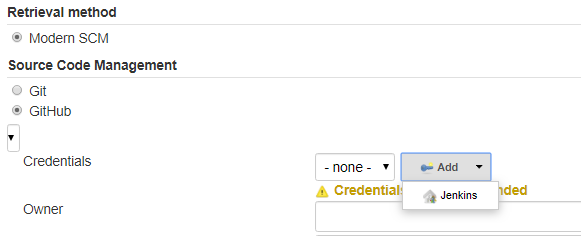
-
On the Jenkins Credentials Provider screen, leave the default options, and enter your GitHub Username. The Password will be your GitHub Access Token. Click Add once the credentials are filled out. 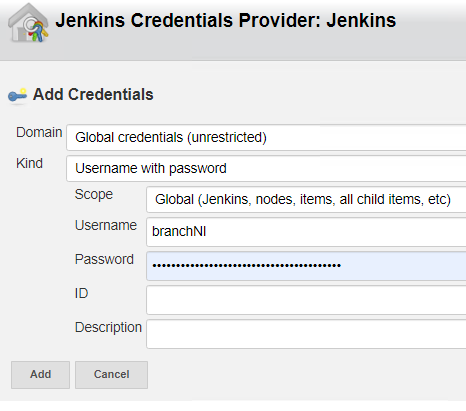
-
Once the credentials are created, select them from the Credentials dropdown. 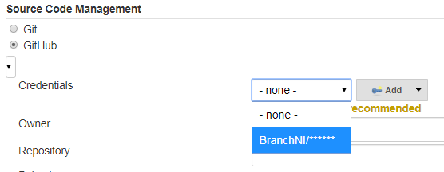
-
Fill out the Owner field and select myBuildSystem from the Repository dropdown. Leave the other options as-is. Your fields should look like this: 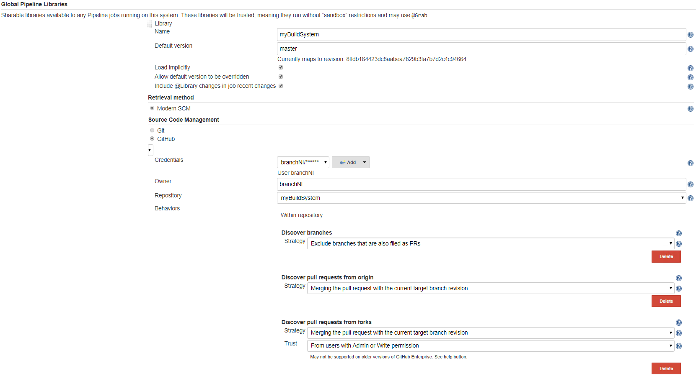
-
Click Save at the bottom of the screen to save your changes.
We’ve successfully linked Jenkins to the global library – this means that the files hosted on the myBuildSystem repository can be accessed and used by Jenkins!
Setting up the Jenkins Pipeline
Finally, we’ll set up Jenkins to scan and automate testing and diffing of your myApplication repository.
-
From the Jenkins dashboard, select New Item. Enter a name for the item and select GitHub Organization. 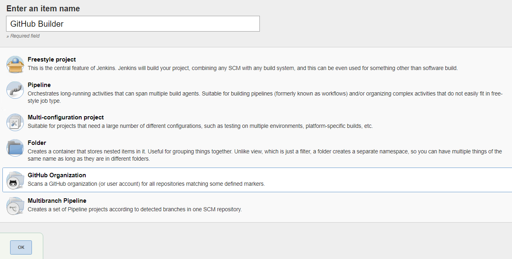
-
Click OK to create the item. You will be redirected to the configuration page.
-
Under the Projects section:
-
Select your Credentials from the dropdown menu and change the value of the Owner field to your GitHub organization name.
-
In Behaviors, change the Discover branches option to Only branches that are also filed as PRs.
-
-
Make sure the Script Path value is Jenkinsfile. Your Projects section should look like this: 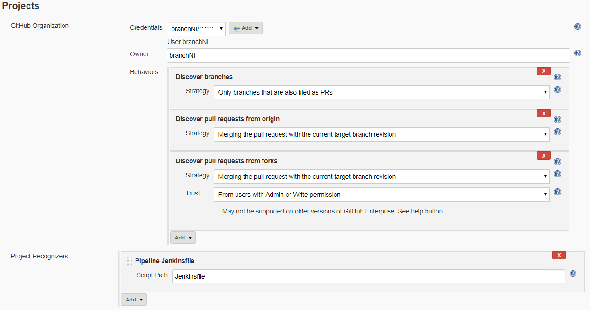
-
Under the Scan Organization Triggers section, select the Interval that you want Jenkins to scan your repository for changes. If Jenkins detects a change, it will initiate the testing and diffing process. For this example, we will use 10 minutes.

-
Note: While the method used in this tutorial sets up Jenkins to scan GitHub for changes, there are methods for GitHub to trigger Jenkins builds whenever a change happens. This involves exposing your Jenkins server so that GitHub can communicate with it through WebHooks.
-
-
Click Save to save your changes. Through this pipeline, Jenkins will now scan your repository based on the interval you just configured.
Confirmation
Let’s confirm that everything works. We’ll do this by configuring our LabVIEW project, making changes to the VIs in our myApplication directory, and creating a Pull Request on GitHub.
-
We will create a branch to the myApplication GitHub repository. Start by opening a Git terminal and navigating to the local
../myApplicationdirectory. -
To create and checkout or use a branch, enter the following commands:
git branch myBranch git checkout myBranch
-
Navigate to the
../myApplication/sourcedirectory. -
Open the
Jenkins.lvprojfile. -
Expand the Build Specifications, and double click myBuildSpec to open its properties:

-
Modify the Destination directory to be the specific directory you set for the LV_BUILD_OUTPUT_DIR environment variable value, in the Jenkins Setup section. This will be the output directory of the build specification.
-
Next, we will modify the VIs. First, open
Add.vi. This is a simple VI that adds two numbers together and returns a result. 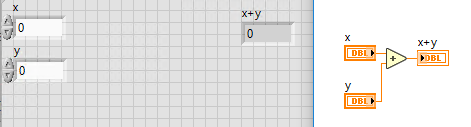 -
Make some cosmetic changes to
Add.vi(don’t change anything that would alter the functionality of the VI), like so: 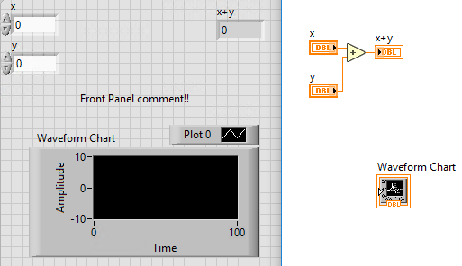 -
Click File >> Save to save the VI changes, and close
Add.vi. -
Now, open
Subtract.vi. This is a simple VI that subtracts two numbers and returns a result. 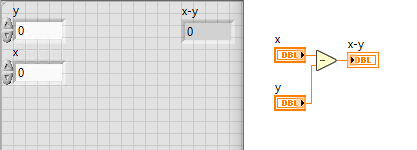 -
Make cosmetic changes to
Subtract.vi; for example: 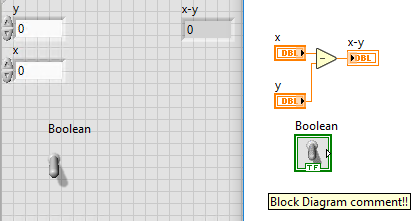 -
Click File >> Save to save changes, and close
Subtract.vi. -
Close
Jenkins.lvproj. Save files if prompted. -
With the Git terminal open, make sure we are still in the
../myApplicationdirectory. Run the following commands to push our changes to the myBranch branch on the myApplication repository:git add . git commit -m “Cosmetic VI changes” git push origin myBranch
-
With our changes pushed to the Branch, we’ll go on GitHub to create a Pull Request. First, navigate to the myApplication repository on GitHub.
-
Navigate to the ‘myBranch’ Branch using the dropdown: 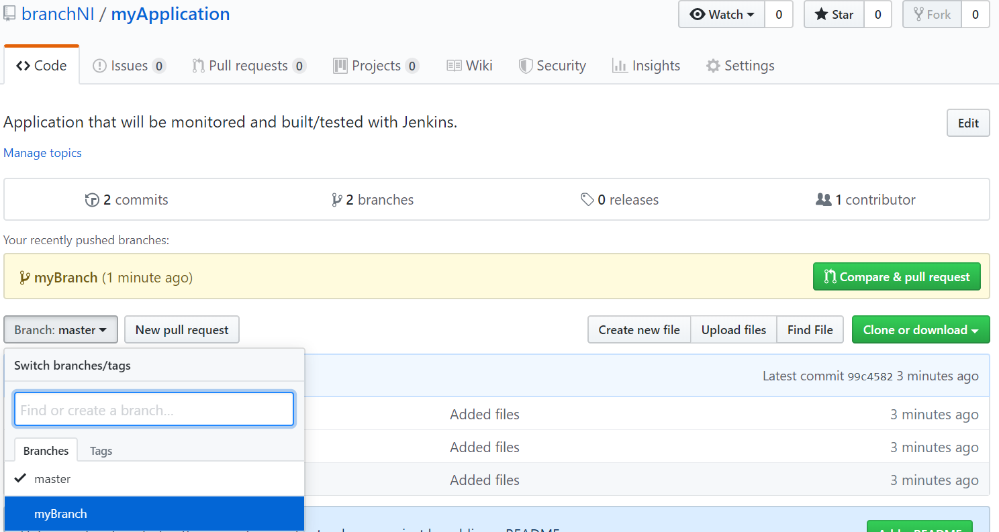
-
On the myBranch page, click on New pull request.
-
Fill out the pull request details as shown. Click Create pull request to create the request. 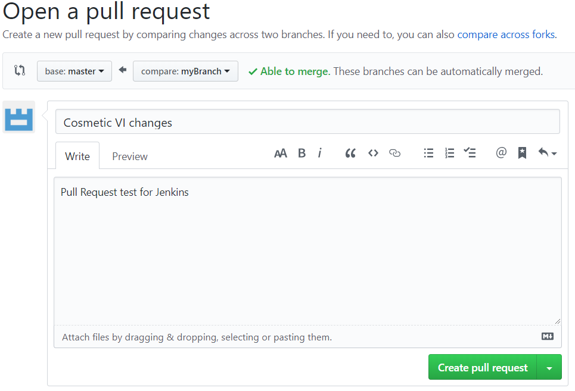
-
Wait for Jenkins to perform its check based on the interval you set, or navigate to your Jenkins dashboard >> GitHub Builder (or whatever you named your Jenkins pipeline) >> Scan Organization Now. Then, navigate to myApplication >> Scan Repository Now.
-
To view the progress of your job, you can navigate to the Pull Requests tab. 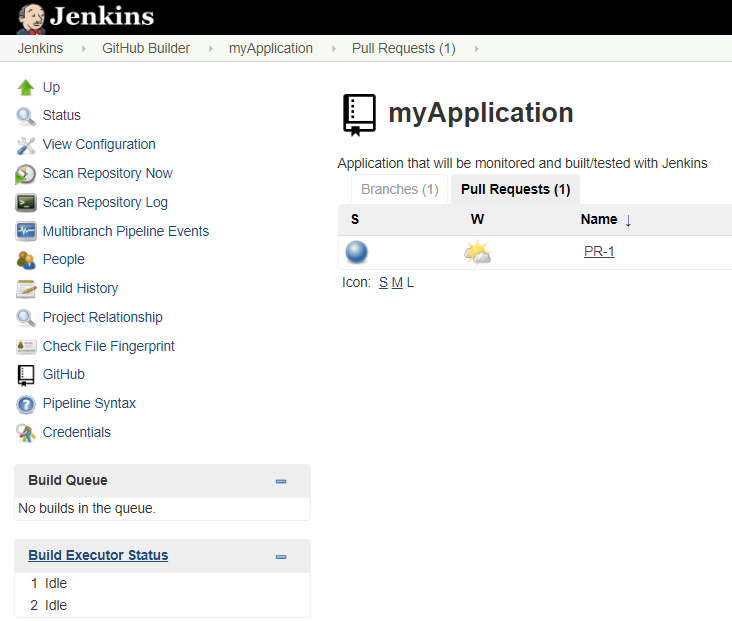
-
Click on the pull request name (PR-1 in this case). The progress of each step is displayed on the main page. The Build History section on the bottom left displays the jobs run. 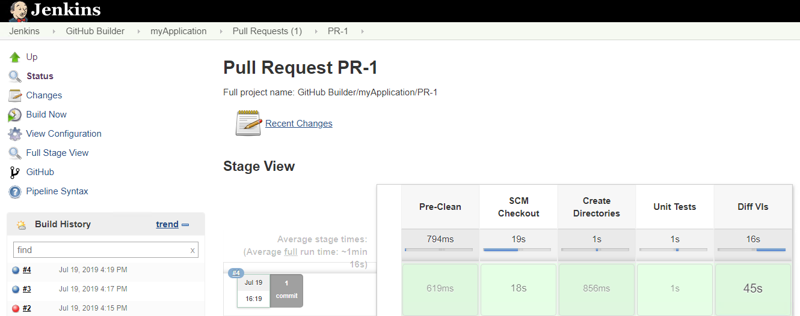
-
If the job was successful, each stage should be Green, and the latest Build in the Build History section should have a blue dot next to it. Additionally, you’ll see the latest artifacts (files you can upload to Jenkins), and the unit test results: 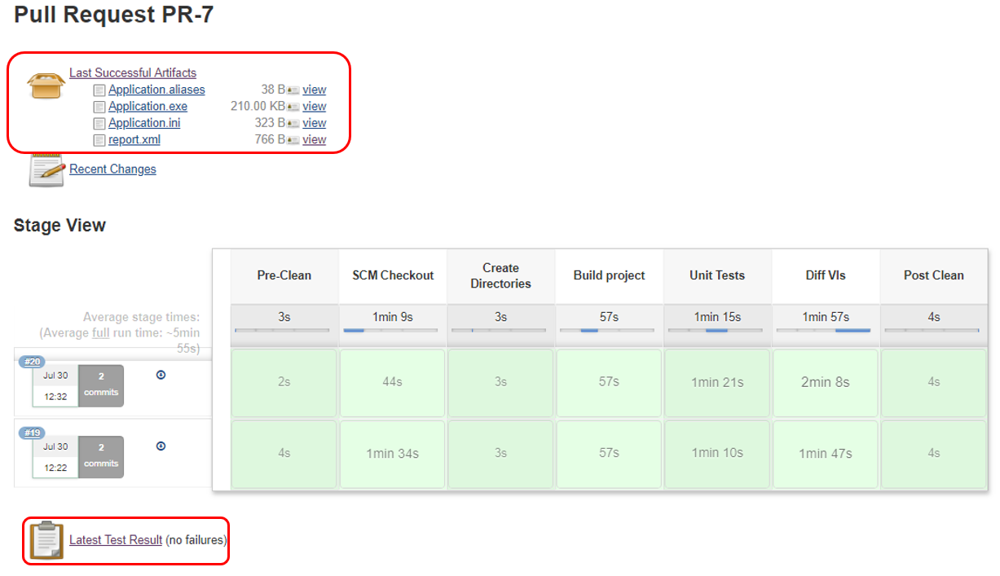
-
If you navigate to your Pull Request on GitHub (Repository Page >> Pull requests tab >> Click on the Pull Request), you should also see the comment that Jenkins posted. 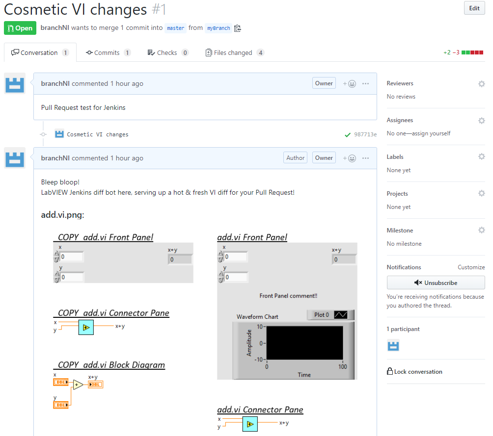
-
If you’re satisfied with the results, you can scroll to the bottom of the Pull Request and click Merge pull request to merge the changes with the master branch. 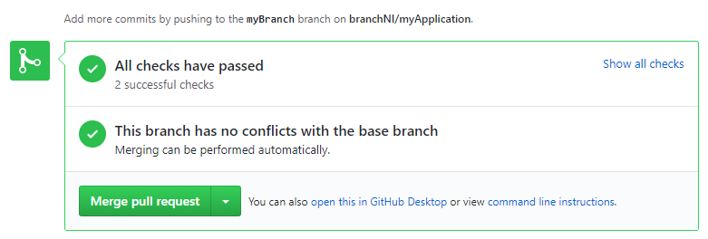
-
If the job was not successful, on the Pull Request page in Jenkins, click on the build number that failed, and click on Console Output on the left sidebar to view error information. 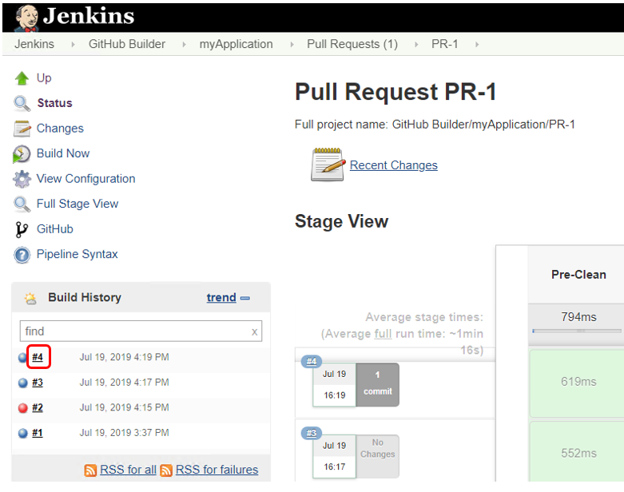
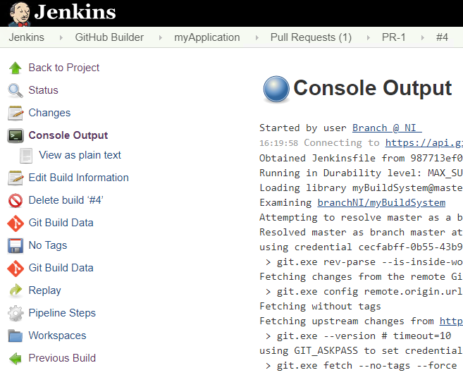
Wrapping Up
Congrats! You’ve just set up Jenkins to automate LabVIEW builds. The "Build", "Test" and "Deliver" stages you created above are the basis for building more complex LabVIEW in Jenkins, as well as LabVIEW applications that integrate with other technology stacks. When doing so, there are some Best Practices you should follow. In case you would like additional command line functionality, we have examples on how to extend the LabVIEWCLI here.
Because Jenkins is extremely extensible, it can be modified and configured to handle practically any aspect of build orchestration and automation.
To learn more about what Jenkins can do, check out:
-
The Tutorials overview page for other introductory tutorials.
-
The User Handbook for more detailed information about using Jenkins, such as Pipelines (in particular Pipeline syntax) and the Blue Ocean interface.
-
The Jenkins blog for the latest events, other tutorials and updates.
Please submit your feedback about this page through this quick form.
Alternatively, if you don't wish to complete the quick form, you can simply indicate if you found this page helpful?
See existing feedback here.